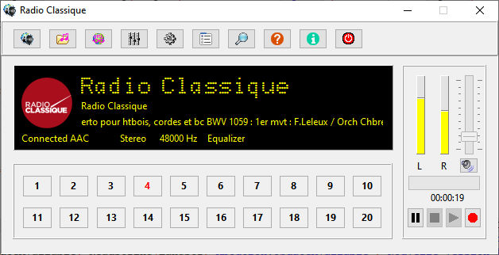
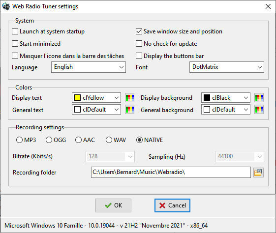

Web radio Tuner
Playing and recording Web radios
Cliquez pour l'aide en FrançaisDownload last version

Place the mouse cursor on an
element of the image to see its action's name.
Click an element to go to the action's detailed description.
Click an element to go to the action's detailed description.
CONTENT
Install
Using the program
The vu-meter and the volume
Radio recording
Uninstall
Notice
PURPOSE OF THE PROGRAM
The program can play and record the radio streams on the Web from their address (url).
INSTALL
Extract archive and execute InstallWebradio.exe, then follow the install program instructions. On the first use, the french radio France Inter is installed. You can add, change or delete radios with a click on the
 button.
button. To preset a radio, click one of the preset buttons.
USING THE PROGRAM
ON regular conditions, the Web radio Tuner can be minimized in the notification area (tray). The program can only be closed with a right click on its icon and the Quit menu or in its main window by a click on the
 Quit
button or the Quit menu in the context menu.
Quit
button or the Quit menu in the context menu.DISPLAY
The radio's name is displayed on the first line. It is the name assigned to the radio during its creation when adding the radio to the radios list. If the radio name is larger than the display, the name is scrolling to allow to see the entire text.
The name chosen by the broadcaster if it transmit it in the stream information. If the name is larger than the display, the name is scrolling to allow to see the entire text.
The radio's logo is displayed if the user has selected a logo file during the radio creation, or during a change of the radio in the list.
The playing sequence's title is displayed on the second display line, if the broadcaster transmit it in the stream information (meta tag).
The technical information are displayed at the last display's line:
Connection status and type. Stereo or mono, bitrate, sample frequency, recording and pause.
PRESETS BUTTONS

A radio is assigned to the button.
To change the preset, place the mouse cursor on the button and right click, then, in the popup menu and select, "Choose a radio in the list". To cancel the preset, place the mouse cursor on the button, right click, then in the popup menu, select "Delete the preset". The red number in a button means the preset radio is currently playing.
There is no radio assigned to the button.
To assign it a radio, place the mouse cursor on the button and right click, then, in the popup menu, select "Choose a radio in the list".
BUTTONS BAR
By default, the Web radio Tuner's standard interface is a buttons bar. The buttons bar cab be hidden (See Settings). In this case the commands are done via a popup menu (mouse right click on an area without buttons).
Open a popup menu to select the radio to play in a dropdown list.
Open the file selection dialog.

Enter the Web address (URL) in the
edit box and click the "OK" button to play the radio or the
"Cancel" to cancel the play.

Set the level of the 9 bands equalizer with the potentiometers and
check the "Enable equalizer" checkbox to apply the settings
at radios and files play.
Click the "OK" button to valid or the Cancel" button to cancel the settings. Previous settings will be applied.
Click the "OK" button to valid or the Cancel" button to cancel the settings. Previous settings will be applied.
To add
a radio, click the button,
then enter the radio name, then its Web address (URL), an eventual
comment in the related fields.
To add a logo file, click the button at the left of the logo field and select the proper file. JPG and PNG are supported. Prefer to use the latter format which respect transparent areas of images. A file's copy is created in the "Images" folder dedicated to the program.
Valid the values with a click the button.
You can cancel all the operation with a click on the
button.
You can cancel all the operation with a click on the  button..
button..
To change a radio, select it in the dropdown list and click the button
and enter the new information in the related fields (see above)
then valid or cancel the
changes.
button
and enter the new information in the related fields (see above)
then valid or cancel the
changes.
To delete a radio, select it in the dropdown list and click the button.
You will have to conform your choice to effectively delete the
radio.
button.
You will have to conform your choice to effectively delete the
radio.
To add a logo file, click the button at the left of the logo field and select the proper file. JPG and PNG are supported. Prefer to use the latter format which respect transparent areas of images. A file's copy is created in the "Images" folder dedicated to the program.
Valid the values with a click the
button.
You can cancel all the operation with a click on the
button..To change a radio, select it in the dropdown list and click the
button
and enter the new information in the related fields (see above)
then valid or cancel the
changes.To delete a radio, select it in the dropdown list and click the
button.
You will have to conform your choice to effectively delete the
radio.To play the selected radio,
click the
button.
When a radio is selected, an image of the its eventual preset button is shown. When you delete a radio, its eventual preset is also deleted.
 Open the search window
Open the search windowSearch is done on the www.radio-browser.info site.
Search can be done by name or name part and/or by country. The maximum count of results is fixed in the Limit field.
The selected radio name and Url are given in the related fields. The eventual link to the radio's icon is shown in the Comment field.
Click the button to add the radio to the radio's list. Then click the Apply
button to valid
the operation or the Cancel button to
cancel operation.Click the button to play the selected radio.
Open the Settings window
The Settings window allow to define the main program parameters.
Place the mouse cursor on an element of the image on the left to see it's action's name. Click an element to go to the detailed action's description.
Once you have chosen the proper settings, click the "OK" button or the "Cancel" button to abort the changes.
System
Start at system startup : Check the box to have the program to start automatically at the system startup.
Start minimized : Check the box so the program will start minimized, with its icon in the taskbar or in the notification area (tray) if you have chosen to hide the icon in the taskbar.
Hide the icon in the taskbar : Check the box to make the program's icon masked when the program is minimized. The icon is then located in the notification area (tray). Left click the mouse on this icon to restore the program's window., or right click to display the program menu.
The Settings window allow to define the main program parameters.
Place the mouse cursor on an element of the image on the left to see it's action's name. Click an element to go to the detailed action's description.
Once you have chosen the proper settings, click the "OK" button or the "Cancel" button to abort the changes.
System
Start at system startup : Check the box to have the program to start automatically at the system startup.
Start minimized : Check the box so the program will start minimized, with its icon in the taskbar or in the notification area (tray) if you have chosen to hide the icon in the taskbar.
Hide the icon in the taskbar : Check the box to make the program's icon masked when the program is minimized. The icon is then located in the notification area (tray). Left click the mouse on this icon to restore the program's window., or right click to display the program menu.
Save
window size and position : Check the box to save the window
size and position when closing the program.
No automatically check for update : Check the box if you don't want the program automatically search updates.
Display the button bar : Check the box to show the button bar at the top of the program's window. The default setting is to mask the bar.
Select the language : Select the program language in the dropdown list. This choice doesn't affect the information data transmitted by the radio.
Select the font for the radio's name : Select the font to display the radio's name. The default font is DotMatrix. You don't need to install this font on your system, it is loaded in memory when the program starts and unloaded when the program closes. To use another font, select a font installed on the system in the dropdown list.
Colors
The display text color, the display background color, the program's window text color and the program's window background are user configurable. Select predefined colors in the related dropdown lists, or click the buttons at the right side of the lists to select an user defined
color.
buttons at the right side of the lists to select an user defined
color.
Recording settings
File format : Click the button related to the recording format you want. The WAV format is specific to Windows and cannot be selected in other OS. In this cases, the settings are defined before each recording in a dialog box displayed by the system, the program settings are ignored. The NATIVE format records the radio stream as is it transmitted, without re-encoding. Recorded files may mon be playable with some players.
Bitrate : Select the maximum recording bitrate in the dropdown list. The most used bitrates for MP3 or OGG are 128 and 196 kbits/s. With AAC, the most used bitrates are 64 and 64 kbits/s.
Sampling frequency : Select the recording sampling frequency in the dropdown list. Most used values are 44100 and 48000 Hz.
No automatically check for update : Check the box if you don't want the program automatically search updates.
Display the button bar : Check the box to show the button bar at the top of the program's window. The default setting is to mask the bar.
Select the language : Select the program language in the dropdown list. This choice doesn't affect the information data transmitted by the radio.
Select the font for the radio's name : Select the font to display the radio's name. The default font is DotMatrix. You don't need to install this font on your system, it is loaded in memory when the program starts and unloaded when the program closes. To use another font, select a font installed on the system in the dropdown list.
Colors
The display text color, the display background color, the program's window text color and the program's window background are user configurable. Select predefined colors in the related dropdown lists, or click the
buttons at the right side of the lists to select an user defined
color.Recording settings
File format : Click the button related to the recording format you want. The WAV format is specific to Windows and cannot be selected in other OS. In this cases, the settings are defined before each recording in a dialog box displayed by the system, the program settings are ignored. The NATIVE format records the radio stream as is it transmitted, without re-encoding. Recorded files may mon be playable with some players.
Bitrate : Select the maximum recording bitrate in the dropdown list. The most used bitrates for MP3 or OGG are 128 and 196 kbits/s. With AAC, the most used bitrates are 64 and 64 kbits/s.
Sampling frequency : Select the recording sampling frequency in the dropdown list. Most used values are 44100 and 48000 Hz.
 button on the right
of the folder field.
button on the right
of the folder field.
Open the program's help
Open the "About" dialog
The dialog displays information about the program (version, compile date, and some important links. Place the mouse's cursor on an element to see its action's name. Click an element to go to the action's detailed description.
Update : Click the line to check if a new version is available. Usually, the check is automatic if you have not changed the setting in the "Settings" dialog (see above).
Web home page : Click the line to open the browser and go to the author's Web home page.
Program home page : Click the line to open the browser and go to the program's home page.
Source code home page : Click the lilne to go to the source code's home page. The program's source code is open source. The file "license.txt" contains information upon the free license.
The dialog displays information about the program (version, compile date, and some important links. Place the mouse's cursor on an element to see its action's name. Click an element to go to the action's detailed description.
Update : Click the line to check if a new version is available. Usually, the check is automatic if you have not changed the setting in the "Settings" dialog (see above).
Web home page : Click the line to open the browser and go to the author's Web home page.
Program home page : Click the line to open the browser and go to the program's home page.
Source code home page : Click the lilne to go to the source code's home page. The program's source code is open source. The file "license.txt" contains information upon the free license.
Click the button to quit the program.
RADIO RECORDING

Click the button to record the
playing radio. With MP3, AAC and OGG, the file will be
encoded according the parameters chosen in the "Settings" dialog.
With WAV (only Windows) a parameters selection dialog is displayed
before the beginning of recording. The button's image is blinking
during recording.
Click again the button to stop recording. The recorded file's location is teh one chosen in the "Settings" dialog.
Click again the button to stop recording. The recorded file's location is teh one chosen in the "Settings" dialog.
UNINSTALL
Use control panel's program management system to uninstall the program.
NOTICE
Use the program at your own risks.
License OpenSSL http://www.openssl.org .
The program uses Un4seen BASS libraries (www.un4Seen.com).
Sources (Windows and Linux) available at https://github.com/bb84000/